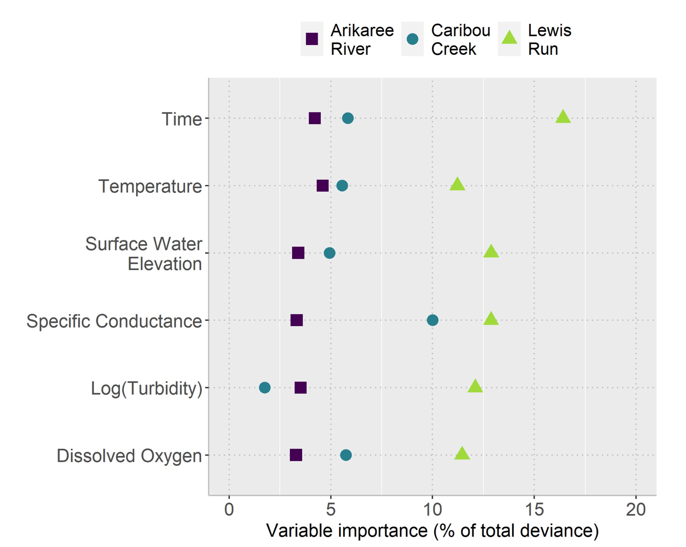

| Site | Climate zone | Nitrate characteristics | Main controlling variables |
|---|---|---|---|
| Arikaree | Semi-arid | Highly variable nitrate (median = 5.5 μM) | No dominant variable; water temperature most important but <5% deviance; temporal autocorrelation critical (25% deviance) |
| Caribou | Subarctic | Stable, low nitrate (median = 28.4 μM) | Specific conductance most important (10% deviance); temporal autocorrelation moderate (17% deviance) |
| Lewis Run | Temperate | High, highly variable nitrate (median = 192 μM) | All variables important; specific conductance highest (>15%), others 11-14% each |
An affordable and accurate method to monitor nitrate
Assessment
Environment
The expensive problem of nitrate monitoring
Nitrate is an essential nutrient, but when present in excess in rivers, it becomes a serious pollutant, leading to eutrophication and ecosystem degradation.
Fertiliser and manure runoff across agricultural fields are often the culprit for the presence of nitrate in rivers. (Jacobo, 2025)
Closely monitoring nitrate concentrations is crucial for water resource management. However, it is a major cost challenge. Traditional methods such as manual sampling are time-consuming and labor-intensive, while dedicated nitrate sensors for continuous measurement are extremely expensive. This limits the ability to deploy widespread and effective monitoring networks. The question is: Is there an indirect way to accurately predict nitrate without having to invest too much in those expensive sensors?
Solutions from accessible data
A recent study by Kermorvant et al. (2023) points to a promising direction. Instead of focusing solely on nitrate sensors, they leveraged data from much more common and low-cost water quality sensors, including water level, dissolved oxygen, turbidity, specific conductance, and temperature. These are already well-established and widely deployed sensors. The data were collected every 15 minutes from three different watersheds in the United States.
The team used a Generalised Additive Mixed Model (GAMM) (a combination of the Generalised Additive Model (GAM) and ARIMA) to analyse the complicated nonlinear relationships between nitrate and these less expensive variables. The results were impressive: Their model explained 99% of the variation in nitrate concentrations at all three sites.
However, the story does not end there. Although the same set of variables is used, their importance varies by location (see Table 1).
Each river has its own “story.” The Arikaree River has a wide range of nitrate concentrations, but no single factor dominates. The Caribou River, with low and stable nitrate concentrations, is primarily influenced by conductivity. Meanwhile, at Lewis Run, a heavily urbanised area, all factors contribute significantly to the nitrate prediction. This shows the flexibility of the model to adapt to different local conditions.

In Figure 1, the importance of water quality variables in explaining nitrate varied significantly between watersheds. In Arikaree, the most important variable was water temperature but it also explained < 5% of the variance, while the ARIMA component contributed up to 25% of the variance. In contrast, at Lewis Run, all variables were significant with specific conductance being the most important (> 15%) and other variables contributing 11–14%, corresponding to GAM explaining up to 85% of the variance. Caribou had a more stable model, with GAM explaining 83% of the variance and specific conductance (~10%) being the dominant variable, while turbidity was the least important.
In short, the correlation between water quality parameters and nitrate concentrations is the basis for these accurate predictions. It means that we can monitor nitrate concentrations using more common and cheaper water quality sensors.
A promising future
This study opens a new era for nitrate monitoring. Instead of relying on a few expensive nitrate sensors, managers can deploy a widespread network of lower-cost sensors for indirect and extremely effective monitoring. As the study by Kermorvant et al. (2023) concluded, this approach “opens up a more efficient and cost-effective way to monitor nitrate.”
In summary, the key findings are:
High feasibility: A set of common water quality variables can predict nitrate concentrations with up to 99% accuracy.
Flexibility: The GAMM statistical model is adaptable to different natural conditions of each river basin.
Cost-effectiveness: This is a revolutionary solution, significantly reducing initial investment and operating costs, allowing for large-scale monitoring.
The cost of addressing nitrate problems in water sources is very expensive. In addition to the expensive measurement costs already mentioned and analysed, the cost of treating the water to remove nitrate is also very high. This result can significantly reduce the cost burden of nitrate concern. In other words, this approach not only helps to protect our rivers more effectively but also optimises the budget, bringing double benefits to environmental protection and resource management.
Reference
Kermorvant C, Liquet B, Litt G, Mengersen K, Peterson EE, Hyndman RJ, et al. (2023) Understanding links between water-quality variables and nitrate concentration in freshwater streams using high frequency sensor data. PLoS ONE 18(6): e0287640. https://doi.org/10.1371/journal.pone.0287640
Jacobo, J. (2025, June 16). First-ever ban on watering lawns in central Iowa due to nitrate levels in rivers. ABC News. https://abcnews.go.com/US/ban-watering-lawns-central-iowa-due-nitrate-levels/story?id=122890515
WSP. (2022). New study measures harmful cost of nitrate in drinking water. WSPglobal. https://www.wsp.com/en-nz/news/2022/new-study-measures-harmful-cost-of-nitrate-in-drinking-water